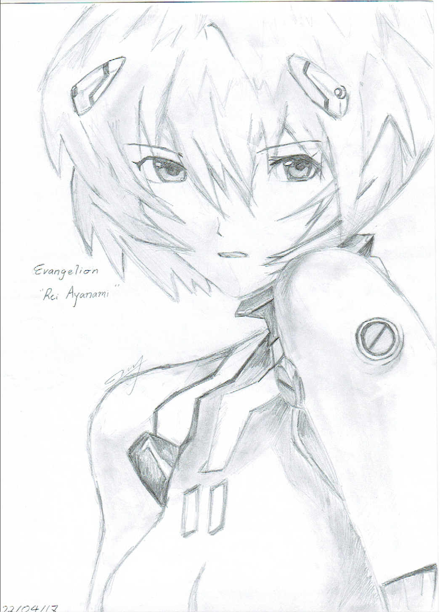

First artwork done on ProCreate during Digital Art class. The fluffy cat located left to the Astronaut is my cat Nermal.

Copic marker drawing for my brother's art exhibition in 2018.

A colored drawing of my two favorite characters in Gintama.

Pencil sketch of Rei Ayanami from Neon Genesis Evangelion.